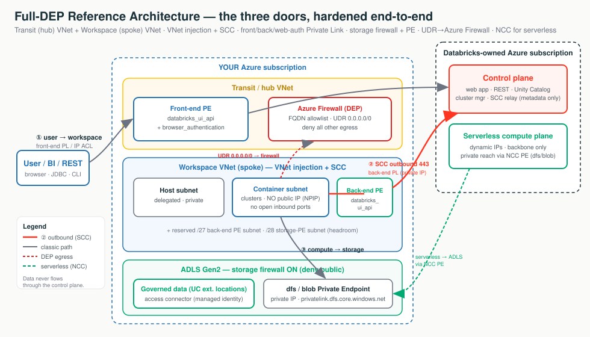

Securing an Azure Databricks workspace is like fitting locks on a secure building with exactly three doors. Name the lock on each door and you have drawn the whole architecture.
The front door. Front-end Private Link or IP access lists.
The staff intercom, outbound-only. SCC, then back-end Private Link.
The loading dock. Storage firewall + Service or Private Endpoints.
One lock per door, plus identity, governance, encryption.
Per door: the free floor control + the paid mandated upgrade.
Trace the packet, name the control, state the trade-off, know what breaks.

Each tab below has its own clickable whiteboard: Three doors → Reference Architectures, Full-DEP packet walk → Walk the Packet, Serverless via NCC → Serverless / NCC. Open a tab, then click a box to see what it does in plain English.
You never invent a new map. Every network question reduces to the same three doors. Pick the closest of four reference architectures, harden each door with the cheapest lock that meets the compliance language, and be ready to walk the packet.
A reference architecture is a pre-drawn floor plan for a building - you don't sketch a new one for every customer, you grab the closest of four and tweak it. The baseline is "good locks on every door"; the hardened version adds a guard who inspects everyone leaving.
A reference architecture is a known-good blueprint. You don't design from scratch per customer - you pick the closest of four floor plans and adapt it.
Click each box to see the only three doors that matter, and the lock on each.
| Blueprint | Floor-plan analogy | What it is |
|---|---|---|
| Standard (recommended) | Corporate HQ, guarded lobby | VNet injection + SCC + back-end Private Link; hub-and-spoke with a separate transit VNet for front-end / browser_authentication. |
| Simplified | Smaller building, fewer rooms | Same three controls, fewer VNets/subnets; front-end and back-end share databricks_ui_api; PEs can be shared. |
| Full DEP / regulated | Mantrap + guard inspecting exits | Standard plus Azure Firewall hub, storage firewall, Public Network Access Disabled, CMK, Compliance Security Profile. |
| IP-exhaustion layout | Enough parking before move-in | Size subnets for peak; CIDR is immutable after deploy, so the only failure mode is too small. |
2 IPs per node (host + container), Azure reserves 5 IPs per subnet, so max nodes is roughly 2^(32-n) - 5 for a /n subnet. VNet /16-/24; subnets /26 minimum. Leave headroom for the /27 back-end PE subnet and /28 storage-PE subnet.
| Subnet size | Usable (after 5 reserved) | ≈ Max cluster nodes |
|---|---|---|
/26 | 59 | ~59 |
/24 | 251 | ~251 |
/22 | 1,019 | ~1,019 |
/21 | 2,043 | ~2,043 |
"We don't custom-build a design for every customer. We pick the closest of four proven references - Standard, Simplified, full-DEP, or the IP-sizing layout - and adapt it. That keeps the design reviewable and the security review predictable."
Quote Simplified for a bank and you fail the audit. Quote full-DEP for a sandbox and you burn budget on a firewall nobody needs. Size for today, not peak and clusters fail to start - CIDR cannot be changed in place (rescue is a Public Preview migration, not Terraform).
Walking the packet means following one request like a parcel through a building - from the moment a user clicks, hop by hop, all the way to the byte of data and back. At each hop you point at the lock on that door and say what would go wrong if it weren't there.
The single most asked senior question: "Walk me through how a query reaches our private storage without touching the internet." They want a hop-by-hop trace, not a feature list. Trace the packet, name the control, say what breaks without it.
Click each hop to see the control and what breaks without it.
| Hop | Control | What breaks without it |
|---|---|---|
| 1. User -> workspace URL | Front-end PL; IP access list or public access Disabled | URL resolves to a public IP - anyone reaches login |
| 2. SSO callback | browser_authentication PE (one per region/DNS zone) | SSO has no route - login fails region-wide |
| 3. CP schedules cluster | SCC/NPIP; VNet injection | VMs get public IPs + open inbound ports |
| 4. Cluster -> control plane | Back-end PL; SCC reversed call; NoAzureDatabricksRules | Outbound rides the public internet to the relay |
| 5. Cluster -> ADLS | Storage firewall; SE/PE; UC external location + access connector | Data path on public internet; storage open |
| 6. Any other egress | UDR 0.0.0.0/0 -> Azure Firewall application rules | A compromised notebook can exfiltrate anywhere |
"The user hits a private endpoint resolved by a private DNS zone, SSO returns through the web-auth endpoint, SCC gives the cluster no public IP and dials the control plane outbound over back-end Private Link, the cluster reaches Unity-Catalog-governed ADLS through a storage private endpoint, and any other egress is forced through an Azure Firewall that only allows Databricks' own FQDNs."
The "what breaks" column is the whole point. Each missing control opens one specific hole. If you can name the hole, you understand the control.
This is simply the do-this list for a brand-new workspace - the things you tick off on day one so nothing obvious is left open. Like a pilot's pre-flight checklist, each item is small, but skipping one can sink the whole flight.
The short list of settings a secure workspace should have on day one. Picture a pilot's pre-flight checklist: each item is small, but skip one and the whole flight is at risk.
The mental trick: MUST items are the airframe (fly without one and you crash). When-mandated items are bolt-ons you add only when the regulatory profile pays for the cost.
| Door / theme | Floor control (free, always on) | Mandated upgrade (costs money) |
|---|---|---|
| ① User -> workspace | IP access lists | Front-end PL + public access Disabled |
| ② Compute -> control plane | SCC + VNet injection | Back-end Private Link |
| ③ Compute -> storage | Storage firewall + Service Endpoints | Private Endpoints (per-GB) |
| Egress | NAT Gateway (stable egress IP) | UDR 0.0.0.0/0 -> Azure Firewall (DEP) |
| Encryption | TLS 1.2+ in transit | CMK (Key Vault) |
| Plan | Premium (the security floor) | CSP / ESM (regulated profiles) |
| Identity | SSO + SCIM + MFA + separate admins | - |
| Data | Unity Catalog for all governed data | - |
| Audit / IaC | system.access.audit + Terraform | - |
| Serverless | Bind an NCC + egress policy (default-deny) | NCC private endpoints |
"When you ask 'is this workspace secure?', I walk the three doors. At each door I name the free floor control and the paid upgrade. We start with the free, backbone-private controls and only step up to Private Link or a firewall where your regulation actually requires no public-IP hop."
Public access left Enabled on a "fully private" design. IP access lists created but enableIpAccessLists never turned on. Storage firewall on without the SE/PE allow rule (locks the cluster out of its own data). Legacy "No Isolation Shared" access mode (users can read keys from driver logs).
Think of your cluster as a worker in a building. SCC (No Public IP) hides the worker - no street address, no door anyone can knock on; the worker only ever calls out. Private Link goes one step further and hides the phone line itself, so the number they dial never travels over the public road. Two different problems - a fully private answer uses both.
The most common interview trap. They are different layers.
| Layer | Question it answers | What it does |
|---|---|---|
| SCC / NPIP | Any public IP or inbound? | Cluster VMs get no public IP, no open inbound ports; the cluster dials out to the SCC relay on 443 and commands return down that reverse tunnel. |
| Back-end Private Link | Any public hop? | Removes the last public hop. Under plain SCC the CP↔DP traffic still rides public IPs on the Microsoft backbone (TLS, but not private-IP). Back-end PL makes it private IP end to end. |
SCC = "no public IP / no inbound." Private Link = "no public hop." Say both. SCC alone does not protect Door ① (user) or Door ③ (storage), and it does not make CP↔DP traffic private-IP - it just reverses the call direction.
"SCC means your cluster VMs have no public address and accept no inbound connections - they call out to us. Private Link is the next step: it takes that outbound call off the public backbone and onto a private IP path. They solve different problems, so for a fully-private answer you want both."
Saying "SCC privatizes CP↔DP" - it's still public IP on the backbone until back-end PL is on. Forgetting SCC does nothing for the user door or the storage door.
Serverless compute is like temp workers Databricks sends from its own building - they show up at random addresses each day, so you can't put a fixed address on your guest list. An NCC is the one official, reserved entrance you set up for them, so they can reach your private data without you ever chasing changing addresses.
Serverless compute runs in Databricks' own account with dynamic IPs. You can't peer it or allowlist a static IP. The bridge is an NCC (Network Connectivity Configuration) - an account-level, regional object you create and attach to workspaces.
Click the boxes to see how serverless reaches private storage without a static IP.
dfs for ADLS Gen2 data, blob for blob / Model Serving artifacts (you may need both)."Serverless has no static IP to allowlist, so the answer is never 'whitelist the IPs.' You create one NCC for the region, attach it to the workspace, add a private endpoint rule pointing at your storage, then approve that endpoint on your storage account. After that, serverless reaches your private data over a private path."
"Just whitelist the serverless IPs" - they're dynamic; it's NCC. Serverless query hangs/denied -> the NCC private endpoint rule is still PENDING (never Approved on the storage account), or the wrong dfs vs blob group ID.
Data exfiltration protection means forcing everything leaving the building out through one inspected door with a short guest list (an allowlist). So even if a notebook is hijacked, it can only "phone home" to the handful of approved destinations - it has no road to an attacker.
*.azuredatabricks.net - you allow names, not IP addresses, because the IPs behind them keep changing.Defense in depth on the egress path: SCC + VNet injection + Private Link + an Azure Firewall hub. A UDR sends 0.0.0.0/0 to the firewall, whose FQDN allowlist permits only Databricks control-plane, metastore, artifact, log, and telemetry destinations plus sanctioned data sources. A compromised notebook has no route to an attacker.
The IPs behind the Databricks names rotate across availability zones, so pin the names. And don't route the SCC relay / back-end-PL traffic through the firewall - once back-end PL is on, that traffic is already private on the backbone; an extra firewall hop adds latency and cost for no gain.
| Purpose | Reach it via |
|---|---|
| Control plane web app + REST + SCC relay | *.azuredatabricks.net on 443 (firewall application rule) |
| Compute-plane (data-plane) traffic | adb-dp-<id>.<n>.azuredatabricks.net on 443 |
| Metastore / EventHub telemetry | AzureDatabricks / EventHub service tags in NSG egress, not application rules |
"We force all cluster egress through an Azure Firewall that only allows Databricks' own FQDNs plus your sanctioned data sources. A compromised notebook simply has no route out. We pair that with a serverless egress policy on a default-deny basis."
If you put an NSG network-policy on the private-endpoint subnet, it must allow inbound 443, 6666, 3306, 8443-8451 or control traffic breaks. This PE-subnet inbound list is distinct from the auto-managed workspace-subnet NSG rules.
Don't start by memorizing FQDNs or quotas. Start by asking which door, and what breaks at which hop.
| Symptom | First Thing To Think |
|---|---|
| SSO down for every workspace in a region | Was the shared browser_authentication host workspace deleted? Does *.pl-auth... resolve to the PE IP? |
| "Private" workspace URL resolves to a public IP | Does custom DNS conditional-forward *.privatelink.azuredatabricks.net to Azure DNS? |
| "Cluster failed to start: insufficient IP addresses" | Container subnet at the 2^(32-n) - 5 ceiling? CIDR is immutable - confirm before promising a fix. |
| Cluster can't read its own ADLS after firewall on | Is the subnet (SE) or PE in the storage allow rules with default_action = Deny? |
| Serverless query to private storage hangs/denied | Is the NCC private endpoint rule still PENDING (not Approved)? Right dfs vs blob? |
| Library install fails after adding the firewall | Are the Databricks FQDNs allowlisted? Is SCC/back-end-PL wrongly routed through the firewall? |
| Partner sees our egress IP "change" | Is a NAT Gateway attached for a stable egress IP? Pin one, give the SOC that. |
| IP access list "isn't blocking anything" | Is enableIpAccessLists actually true? Private-endpoint traffic is never IP-filtered. |
| New workspace has no outbound internet (post 2026-03-31) | New Azure VNets default to no outbound - needs an explicit NAT Gateway or firewall/UDR. |